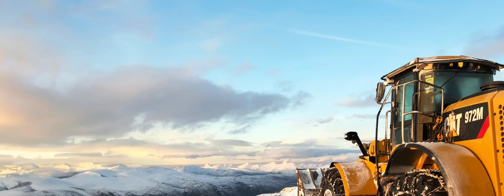

Grunnarbeid
Vi avklarer omfang og tid før vi starter.
Be om tilbud →
industri · Inderøy
Med lang erfaring innen fagfeltet tar vi på oss store og små oppdrag for private og offentlige kunder.
Tjenester
Vi avklarer omfang og tid før vi starter.
Be om tilbud →Du har én kontakt gjennom hele saken.
Be om tilbud →Vi sier hva det koster før vi begynner.
Be om tilbud →Arbeidet dokumenteres mens det pågår.
Be om tilbud →Om oss
Vi tar både små og store oppdrag og har egne godkjente massedeponi i Trøndelag.
Vi har erfaring med transport av hus, vindmøllekomponenter og store anleggsmaskiner, og disponerer spesialutstyr for krevende transportoppdrag.
Vi har maskiner og spesialutstyr for effektiv rivning, sortering og gjenbruk av byggavfall, og utfører prosjekter for både næring og private kunder.
I over 70 år har vi jobbet for å være det foretrukne valget av entreprenør- og transporttjenester for offentlige og private kunder.

Forside - Austad Maskinstasjon AS Skip to content Toggle Navigation Hjem Tjenester Jobb Om oss Hvem er vi?
Slik kunne det se ut
I produksjon og anlegg blir avvik meldt i møter, og status er utdatert før neste møte. En side der avvik, fremdrift og tiltak oppdateres underveis gir svaret når noen lurer.
Avvik og fremdrift, oppdatert
Fra arbeidet
Du beskriver hva du trenger, og vi svarer med hva det krever.
Vi blir enige om omfang, pris og når det skjer.
Vi gjør jobben og går gjennom resultatet med deg.
Eksempel


Ordrett fra nettsiden deres
Med lang erfaring innen fagfeltet tar vi på oss store og små oppdrag for private og offentlige kunder.
Austad Maskinstasjon AS har bred erfaring og tar på seg både store og krevende oppdrag for private og offentlige kunder. Vi har sentral godkjenning innen veg- og grunnarbeid, landskapsutforming, innmåling og utstikking
Austad Maskinstasjon AS har sertifiserte anleggsrørleggere med høy kompetanse på komplekse vann- og avløpsanlegg. De har sentral godkjenning innen vannforsyning og avløp, og tilbyr tjenester som rørlegging, ledningsarbeid, vann-, overvann- og avløpsløsninger samt etablering av kummer.
Kontakt
Ta kontakt for en uforpliktende prat i Inderøy.
Beskriv saken, så svarer vi med hva det krever og hva det koster.
Send en henvendelse